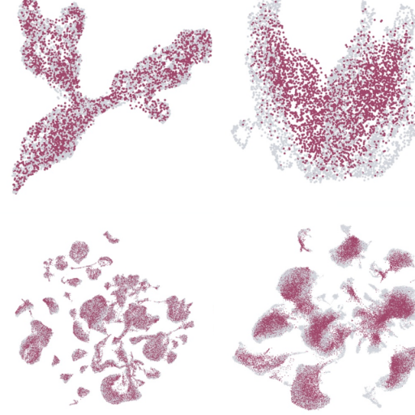
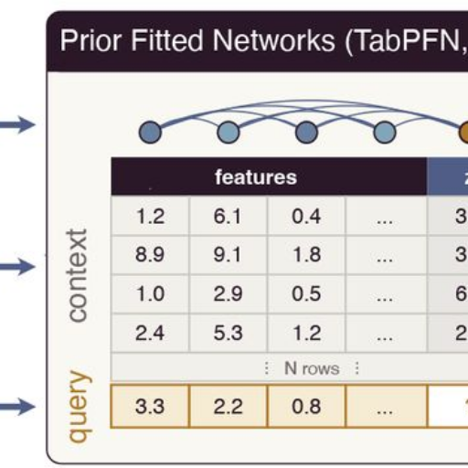
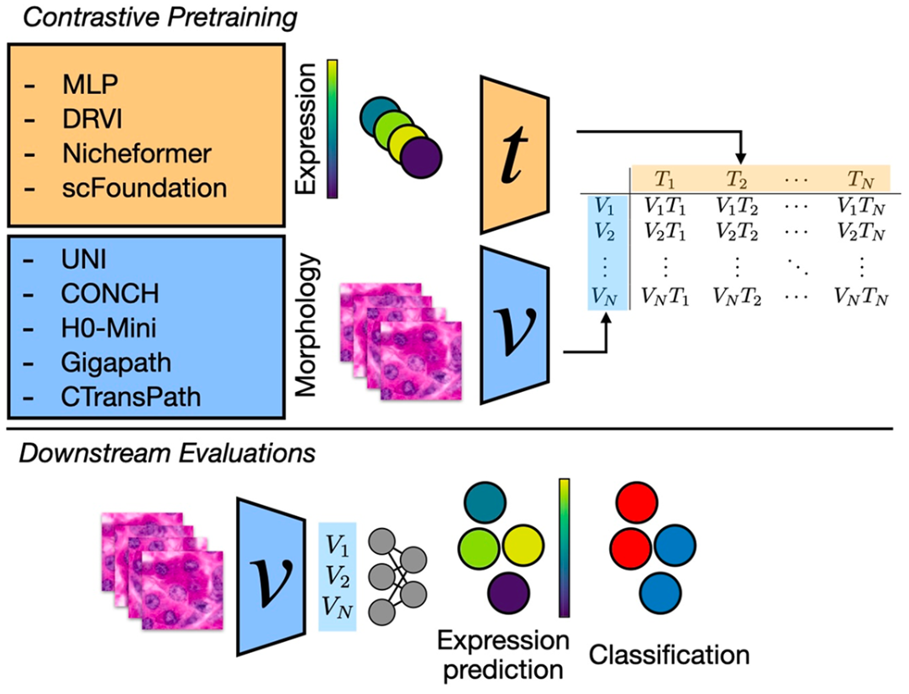
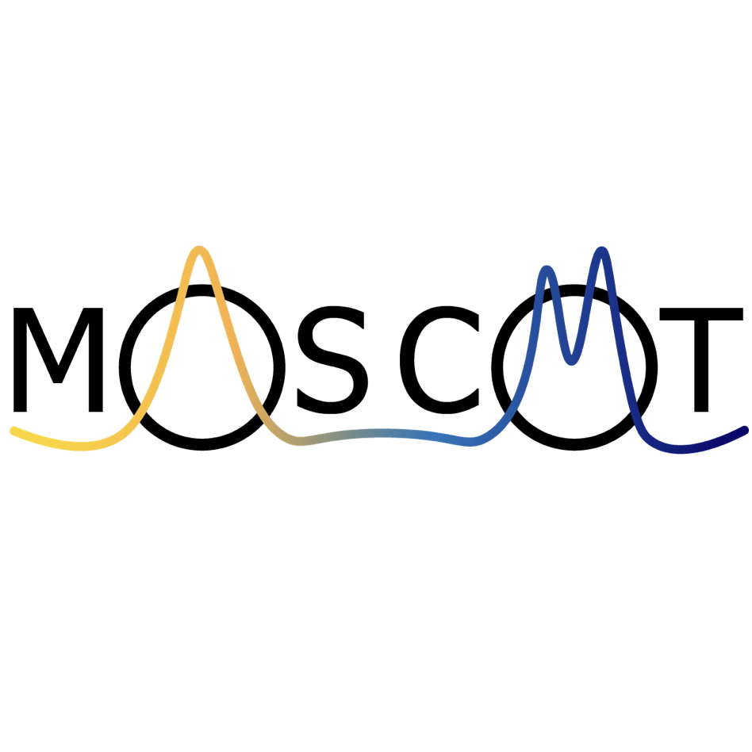
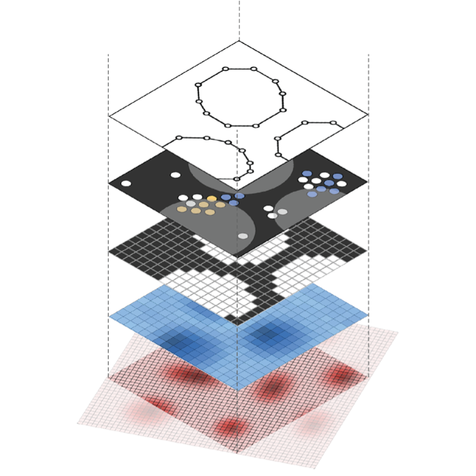
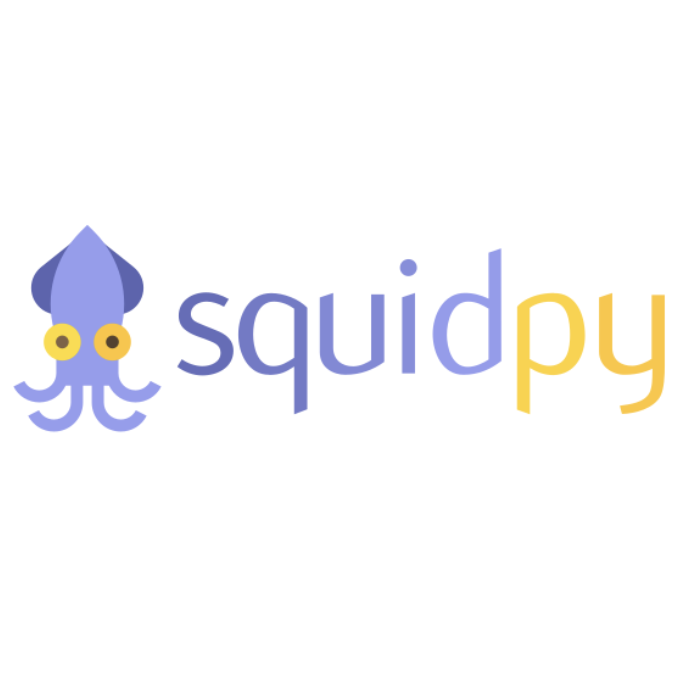
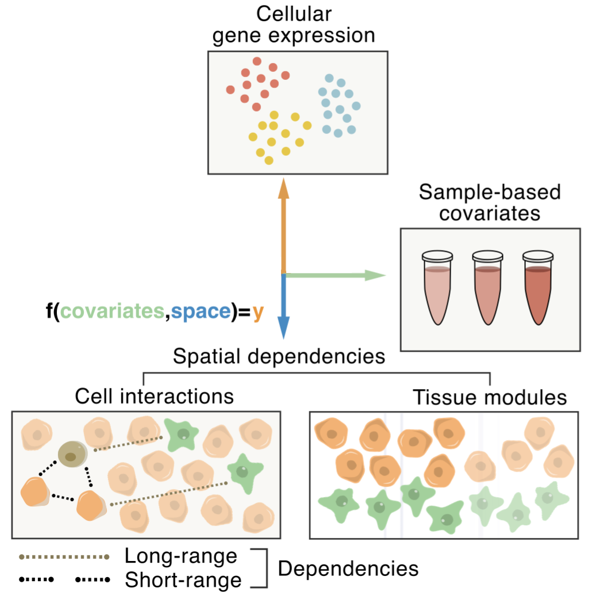

scLDM
A scalable latent diffusion model for single-cell gene expression generation.
Project page|Paper(ICML, 2026)
I am a Member of Technical Staff at Lila Sciences.
I was a Research Scientist at Biohub. I have completed my PhD under the supervision of Fabian Theis at the Computational Health Center, Helmholtz Munich and the Munich School for Data Science. I have cofounded and I was a core developer of scverse, an open-source ecosystem for single-cell data analysis.
vitae / scholar / github / linkedin / substack
I like doing endurance sports outdoors and reading books.

A scalable latent diffusion model for single-cell gene expression generation.
Project page|Paper(ICML, 2026)

General-purpose tabular foundation models match specialised single-cell models at predicting perturbation responses.
Project page|Paper(bioRxiv, 2026)

A large scale benchmark for cross-modal learning of histology and spatial expressions.
Project page|Paper(ICCV - CVAMD, 2025)

A framework for mapping cells in time and space with optimal transport.
Project page|Paper(Nature, 2025)

An open and universal framework for multi-modal spatial omics data.
Project page|Paper(Nature Methods, 2024)


A perspective and review on open problems in tissue biology.
Paper(Nature Biotechnology, 2022)
scLDM was accepted at ICML 2026.
I gave an invited talk at the Computational Biology Reading Group at 10x Genomics (online).
I gave an invited talk at the Mila Multiomics Reading Group (online).
I am co-organizing the 2nd scverse conference at Stanford. I will be chairing the panel on Agentic Workflows in Bioinformatics.
I am co-organizing the workshop Learning Meaningful Representation of Life at ICLR 2025 in Singapore.
I have joined the Chan Zuckerberg Initiative AI/ML team as Research Scientist.
I am presenting a poster on Moscot at Single Cell Genomics 2023 in Engelberg, Switzerland.
I am presenting a poster on Moscot and SpatialData at the Human Cell Atlas General Meeting 2023, in Toronto.
I am joining the BioML team, at Microsoft Research New England in Boston, for 3 months.
Talk at the Statistical Methods for Post Genomic Data workshop, Ghent, 2022.
Contributed talk at NeurIPS 2022 - LMRL workshop - Modeling Single-Cell Dynamics Using Unbalanced Parameterized Monge Maps.
Talk at the ECCB 2022 - Workshop on Spatial Transcriptomics and cell-cell communication modelling.
Contributed to workshop on Spatial Omics Data Analysis 2022.
Poster at ICML 2022 - Workshop on Computational Biology - Uncertainty Quantification for Atlas-Level Cell Type Transfer.
Organized virtual workshop Spatial transcriptomics data analysis in Python Single Cell Omics Germany.
Instructor at the Swiss Institute for Bioinformatics course on Advanced topics in single-cell analysis in Basel.